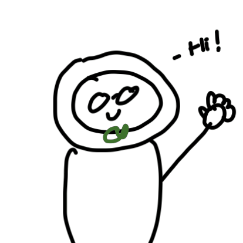
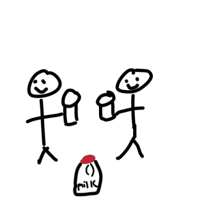
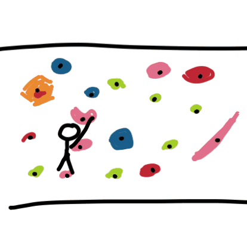
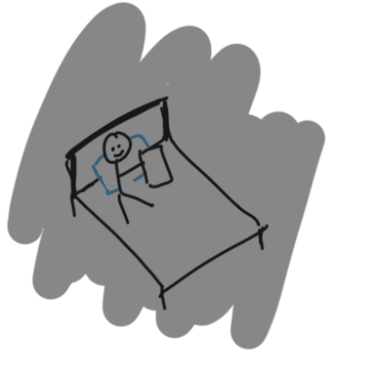
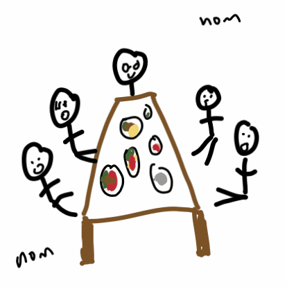

about me!
Hello! I'm Wenli, currently a 3rd year mechanical engineering
student at Northeastern University with a minor in computer
science. (grad: May 2028) On campus, I'm involved in ASME, SWE,
NU Wireless.
I'm interested in learning how physical systems are built and
optimized, drawing me towards manufacturing and process
improvement. My technical skills are a blend of both engineering
and computer science, including CAD modeling in SolidWorks and
programming in Java and MATLAB. I've gained first hand
experience with these tools through engineering projects and my
first co-op.
Most recently, I completed a mechanical engineering co-op at CPI
Electron Device Business, where I designed fixtures and improved
production processes for various product lines. I'm currently
searching for my second co-op and hoping to use the experience
to broaden my horizons as an engineer. I'm open to exploring
different areas of mechanical engineering, learning new skills,
and taking on problems that are outside of my comfort zone. Long
term, I'm still exploring where I fit best, which is exactly why
I want a second co-op to narrow the kind of engineering I want
to build a career in.

now... for some things about me 😊!

i like milk 🥛❤️
climbing 🧗
video games 🎮
eating with friends 🍗ok here's the resume for more on my experience and skills if you want it (please want it).